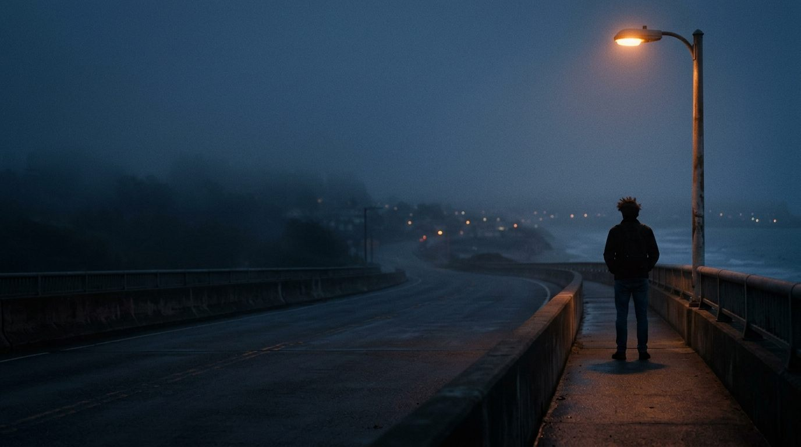

Creative · Audiovisual · Storytelling
DANIELS®
Stories in motion.
Transforming ideas into visual experiences.
Selected work
Selected works.
Films, visual concepts, and creative projects built around different ideas and perspectives.
Design & Art Direction
Beyond the frame.
Posters, visual identities, campaign artwork, layouts and visual experiments — the work that happens around and outside the moving image.
About Daniels
The person behind the images.
I'm Daniels, a Brazilian designer and audiovisual creative interested in cinema, visual storytelling, and the power of images to communicate ideas and emotions.
My work moves between film, editing, design, and art direction. I'm interested in the thinking behind every creative decision — how composition, rhythm, sound, and visual language can turn an idea into a meaningful experience.
I'm building my practice around creating and directing audiovisual projects while continuing to explore new visual languages and ways of telling stories.
Production house · Original projects · Films
ARTURUS
A production company by Daniels.
Arturus is a space for developing audiovisual projects, original films, and creative collaborations. It represents the production side of the work — where ideas become films and visual experiences.
Contact
Let's create something meaningful.
Open to creative opportunities, collaborations, and audiovisual projects.